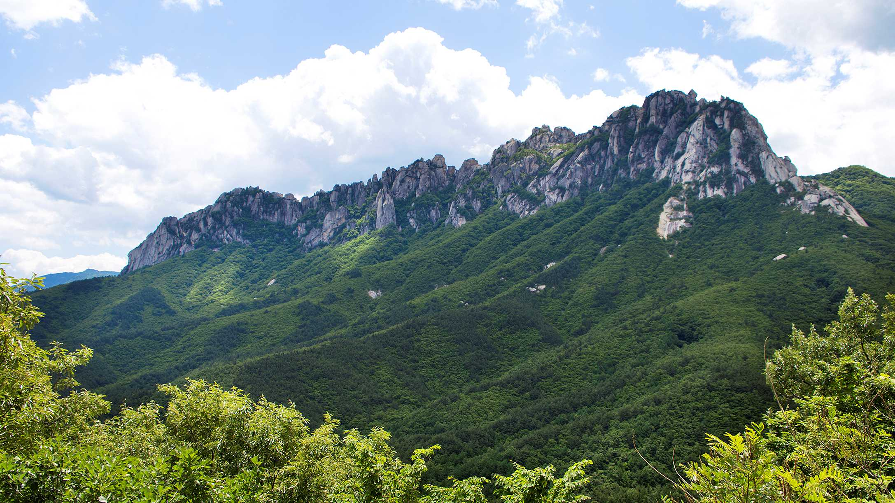

시산제 — 총동문회 주관 통합 시산제

통합 시산제
포스터/사진
포스터/사진
| 일시 | 2026년 3월 14일 (토) |
|---|---|
| 장소 | 소래산 (인천 남동구) |
| 주관 | 인천상공회의소 CEO아카데미 총동문회 |
| 참석 대상 | 총동문회 전 회원 및 산악동호회 회원 |
| 프로그램 |
- 2026년 안전산행 기원 시산제 거행 - 소래산 통합 산행 - 산행 후 친목 만찬 |
| 참가비 | 추후 안내 |
| 준비물 | 등산화, 간식, 물 |
마감됨
워크숍 — 2026 산악동호회 워크숍

워크숍
포스터/사진
포스터/사진
| 일시 | 2026년 6월 19일 (금) ~ 20일 (토) / 1박 2일 |
|---|---|
| 장소 | 강원도 설악산 / 속초 일대 |
| 참석 대상 | 산악동호회 전 회원 |
| 프로그램 |
1일차 (금): - 설악산 산행 (코스 추후 안내) - 저녁 만찬 및 워크숍 (하반기 활동 계획 논의) - 친목 레크리에이션 2일차 (토): - 속초 해안 트레킹 또는 자유 관광 - 점심 후 해산 |
| 참가비 | 추후 안내 (숙박·식사·교통 포함) |
| 준비물 | 등산화, 스틱, 1박 개인 용품, 간식, 물 |
백두산 — 백두산 특별여행

백두산 특별여행
포스터/사진
포스터/사진
| 일시 | 2026년 8월 27일 (목) ~ 29일 (토) / 2박 3일 |
|---|---|
| 장소 | 백두산 천지 (해발 2,744m) — 중국 지린성 |
| 참석 대상 | 산악동호회 회원 (선착순 모집) |
| 프로그램 |
1일차 (목): - 인천공항 출발 → 중국 옌지/창바이 도착 - 현지 숙소 체크인 및 저녁 만찬 2일차 (금): - 백두산 천지 등반 - 장백폭포, 온천 등 주변 관광 - 저녁 뒤풀이 및 친목 시간 3일차 (토): - 현지 관광 또는 자유 시간 - 공항 이동 → 인천 귀국 |
| 참가비 | 추후 안내 (항공 + 숙박 + 현지 교통 + 식사 포함) |
| 필수 준비물 | 여권, 등산화, 방한용품, 우비, 개인 상비약 |
| 유의사항 | 여권 유효기간 6개월 이상 필수 / 별도 여행자보험 권장 |